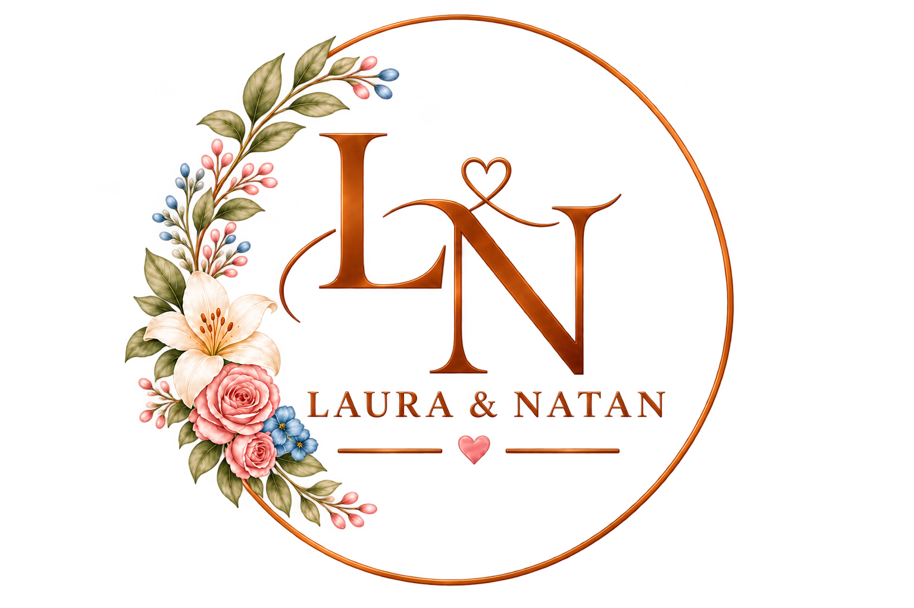
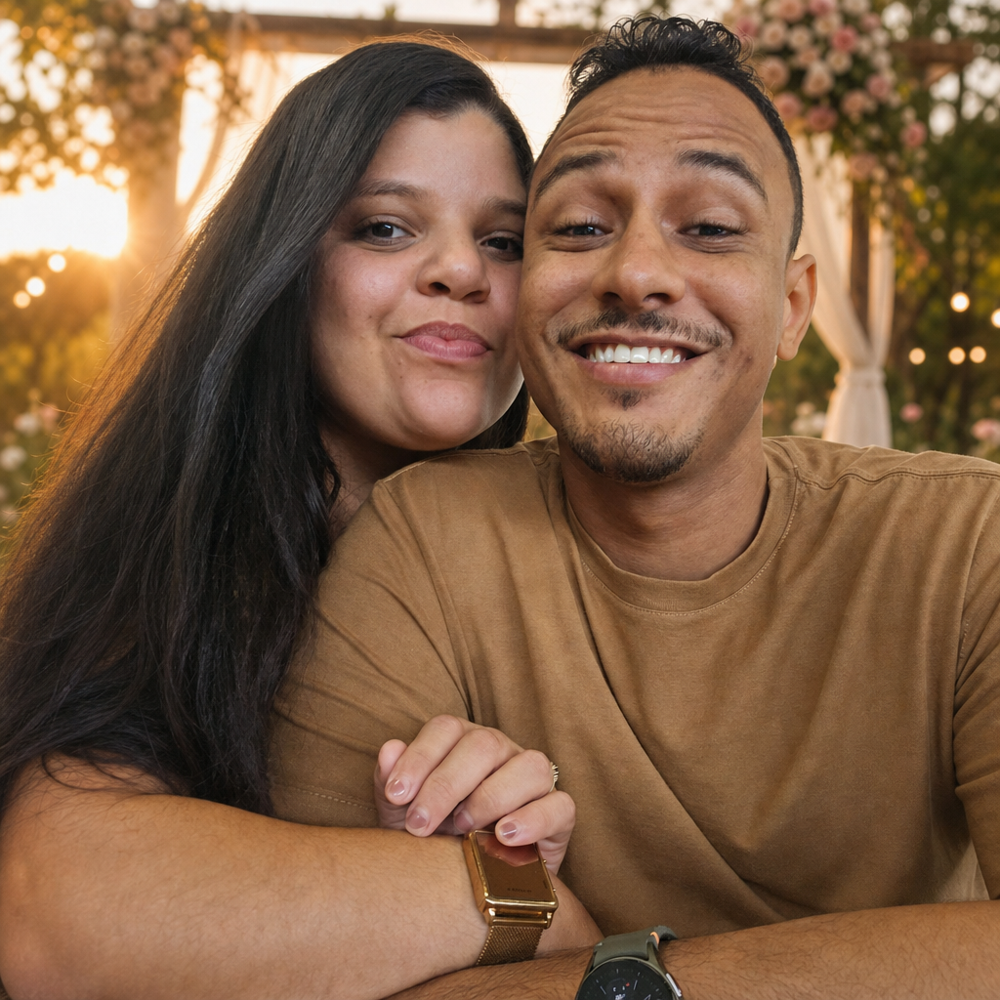

A cerimônia
16h00 · O nosso sim
Haras Residence
São Cristóvão, Sergipe
Chegue com 20 minutos de antecedência para aproveitar cada instante.
Ver localização
♡ 21 de março de 2027
Foi Deus quem
escreveu a nossa
história.♡
Falta pouco para o nosso sim

Contando os dias
para viver isso
com você ♡
Nossa história
Um retiro que ela quase não foi. Um louvor cantado a dois, antes mesmo de se conhecerem. E um pedido de namoro no Dia Mundial dos Jovens Adventistas.
Agora é a vez do sim. E queremos viver esse novo capítulo ao lado de quem faz parte da nossa vida.
Natan & LauraO próximo capítulo21 de março de 2027
Vai ser ainda mais especial com você por perto.
16h00 · O nosso sim
Haras Residence
São Cristóvão, Sergipe
Chegue com 20 minutos de antecedência para aproveitar cada instante.
Ver localização18h30 · Juntos à mesa
Haras Residence
No mesmo espaço da cerimônia
Depois do sim, é hora de abraçar, celebrar e criar novas memórias.
Vou celebrar com vocêsSão Cristóvão · Sergipe
Haras Residence
Um cenário para o nosso começo
O endereço completo e as orientações de chegada serão confirmados por aqui.
Informações úteisUm pouco do que sonhamos
Leveza, carinho
e um toque de nós.
Nossa foto e os detalhes que inspiram o nosso grande dia.
Você faz parte dessa história
Reserve um lugar na sua agenda.
Nós já reservamos um lugar no coração.
Com carinho, para você
As orientações de acesso e estacionamento serão confirmadas em breve.
Em breve, compartilharemos sugestões de hospedagem próximas ao Haras Residence.
Sua presença é o nosso melhor presente. Para quem quiser participar do nosso novo começo, deixaremos as opções por aqui.